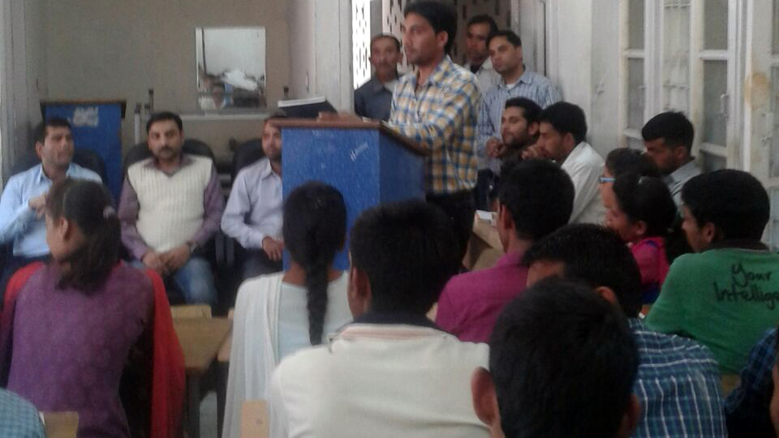
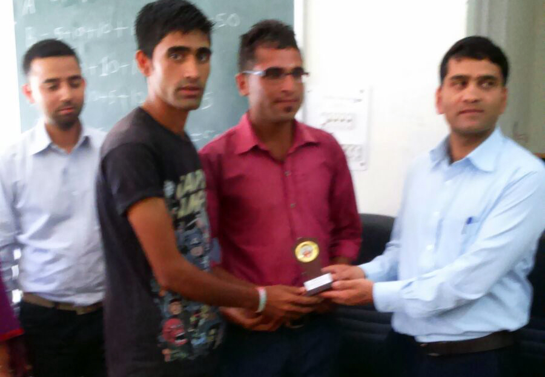
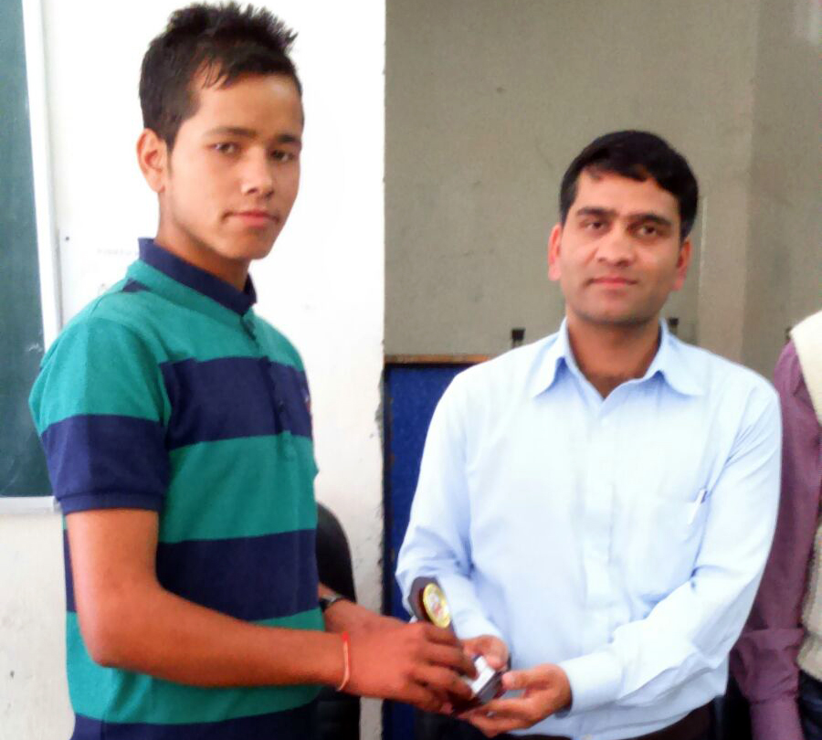

Student Section
Click here to view the syllabus newStudent Support & Progression
Student Mentoring Support -
Students of the college are being introduced to a democratic educational environment, where they are allowed to freely intract with their teachers and they have no hesitation in conveying their problems to the Principal of the college. From the very onset of students’ admission to the college, the teaching faculty of the college has been very helpful and provide them sufficient information regarding the selection of subjects, their future prospects and their interest. It certainly helps the students to develop expected attitudes and aptitudes regarding career advancement.
a) The college has a career guidance and counselling cell, which also help the students regarding their career and learning related issues. Despite the observed problems of a parochial worldview in the social environment of the area, the students are introduced in a wider, democratic and humane environment so that they may create a worldview congenial to the understanding of global standards of 21st century. The Internal Quality Assurance Cell (IQAC) of the college has been operational since one year and it is trying to enhance the quality of learning and knowledge in the college. It is expected in that in new future, particularly after the construction of new college building, the IQAC will come up with more constructive programmes for the quality knowledge, academic advancement and research oriented measures. Students will be associated with the programmes of the college in organizing programmes of the college with a view to develop managerial and leadership skills among them.
b) The college has constituted the CSCA on the basis of merit of the students,as per the decision taken by the H.P.University, Shimla and H.P.Government.
Students Progression -
Given the appropriate environment, the students have shown sufficient progress in curricular activities. This was the collective effort of the college faculty and administration that a girl of the college ranked 6th in the B.A final results of H.P.University in 2015.
Students Participation and activities -
Despite the fact that the college does not have the sanctioned posts of Physical education and Music, the students of this college are encouraged to participate in sports and Youth Festival events. Their efforts have been appreciated by the event managers and observers. Students are also encouraged to share their opinions regarding the activities of college development. Any suggestion of constructive significance from students are democratically welcomed and shared by the IQAC of the college and the Principal.
Innovation & best practices
Environment Conciousness -
The college has created an ECO-Club, which helps in developing environment consciousness among the students. Cleanliness drives are also part of NSS unit of the college which visits nearby villages in order to spread the message of clean and green environment and to work in co-ordination with them. The college administration has planned to co-ordinate with the civil hospital and civil administration at Tissa, so that a wider environmental drive may be developed in continuity.
Innovations -
The IQAC of the college has identified certain basic problems of the students in their learning process. Hence, seminars and discussions during teaching and assignments have been emphasized so that the problem of inexpressiveness may be addressed. This will also help in cultivating articulative potential of the students.
Best Practices -
Despite all constraints, the college sends the internal assessment to the university well in advance. The college has utilize the grants received from RUSA and our further plan is prepared in advance.
Awareness program organised for stronger democracy, gets great response.
It was organised on 01-10-2015 in the institute premises.
A quiz was organised on the occasion and prizes were distributed to the winners.

 